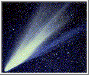
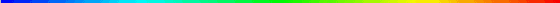
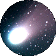

Comet Hyakutake
On March 26, 1996 I went outside to see the new comet.
When I looked up
I could see it right away.
It was right beside the Big Dipper, a little to
the left.
When I saw it through my neighbour's binoculars I focused a
little and it was spinning clockwise or counterclockwise.
It was white and
I didn't see a tail, but my friend did.
It looked like it was a star that
was really foggy.
Travis Jardine,Grade 6 J.Muise


Back to the Hairy Star Homepage